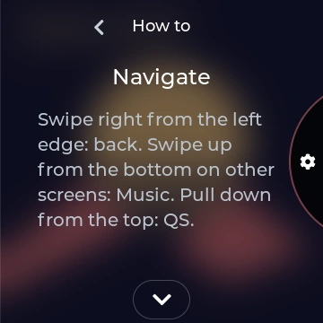

Music
Disco
For disk junkies.
Cover to cover. Colour to colour.
A little record-store magic in your pocket.
Disco! 3.2.1
Big type. Deep black.
A little colour. All your music.
The original vision, with a little extra Disco polish.
Meet the people behind it Your Disc. A fresh perspective.
Your Disc. A fresh perspective.01 / 07 · Main menu
A bold, flowing menu keeps your collection close. Return Home and Now Playing is ready, with room for the track and artist underneath.
On the player: swipe up to return Home.
Real interface renders with sample music, illustrated demo artwork and listening history. Choose a screen and an accent; tap the Disc to enlarge. This walkthrough previews the interface, rather than simulating playback.
A fresh look for your Snowsky Disc
Four personalities. Your music, always within reach.
New in 3.2.1 Smoother wheel lists. The Shade. A letter wheel you turn.
Music
Cover to cover. Colour to colour.
A little record-store magic in your pocket.

Music
Pixel type. Electric colour. That old-player feeling.
Shout-out to the SanDisk Clip+.

Music
Big type. Easy touches.
Matching menus. All five working modes in view.
Tap a small screen to try the look. Tap the big one for a closer look.
See it move
An earlier tour of Disco, Null and the shared features. Explore the new Zune theme above.
Small player. Big personality.
Your colours. Your shortcuts. Your way to play.

 A little more you.
A little more you.

A little help, right when it helps.
Little hints meet you where you are. The built-in How to walks you through the gestures, one screen at a time.
Keep the quick guide handyNew in 3.2.0
Wheel lists keep the song you’re on in the middle. The Shade shows what’s playing before Quick settings. Turn the letter wheel to jump through your library.
See what’s new


Beyond the next track
Bring music from Navidrome or an SMB3 share. Play by mood. Let Roulette pick a forgotten favourite.
There’s more in the tour


Disc Shelf is built in. Choose what to bring, download it, then listen offline. Navidrome downloads are neatly filed by artist, year and album. Wi-Fi stays awake for copies when supported, then returns to its previous power-saving mode. Get started. SMB3 support is experimental.
For a fresh start, assign Shuffle! to your menu hold action.
A new look. A shared effort.
The Zune theme began with namastecoconut-imagined’s Zune fork: its Metro-inspired visual direction, expressive typography, dark canvas, home menu and distinctive music and library presentation. That design and implementation are the foundation of what you see here.
We adapted the theme into Disco’s shared controls and features, retaining its character. Please visit the original author’s work and give them the credit for the idea.
zmd22’s pass focuses on readability and everyday use: larger small text, more balanced spacing, clearer confirmations, configurable shortcuts, a new accent-coloured volume overlay and shared library views.
Built on b0hemia’s diskOS and the work of its contributors, with LVGL and Open Sans. Open Sans keeps its SIL Open Font License. Full acknowledgements and licences.
An unofficial fan theme; not affiliated with Microsoft. Thanks to everyone who builds, tests and shares improvements for this little player.
Same Disc. Fresh energy.
Free, open source, and made for the FiiO Snowsky Disc.
Disco! 3.2.1. Smoother wheel lists and a few fixes on top of 3.2.0: wheel lists, a now-playing Shade before Quick settings, a letter wheel you turn and a round A–Z keypad, round track menus, one header line everywhere and a battery-friendlier interface. Get the release or read what’s new.
Best-effort hobby project, experimental, as-is. No warranty or liability; not affiliated with FiiO or Snowsky. Back up your music and keep the saved stock image before you install.
First install & Linux guidemacOS install guideAll downloadsSwitching & going backWhat’s new
Made for FiiO firmware V2.57. Start from FiiO’s stock V2.57 firmware: installing over upstream diskOS or another diskOS build is not supported and can be buggy. Switched from upstream diskOS and something looks wrong? Settings › System › Maintenance › Reset diskOS Settings. Starts stock after installing? Hold Volume Up at power-on, then Settings › System › Controls › Default UI › diskOS. Back up your player before you begin.
A note from zmd22
I’m out. Thank you to everyone who built, tested, shared and listened. Enjoy the music.